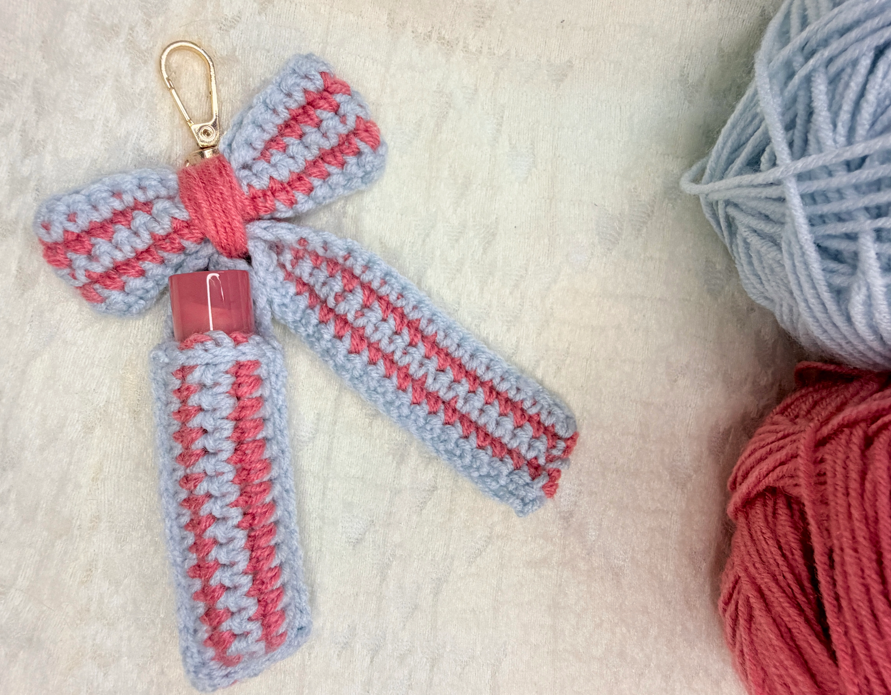
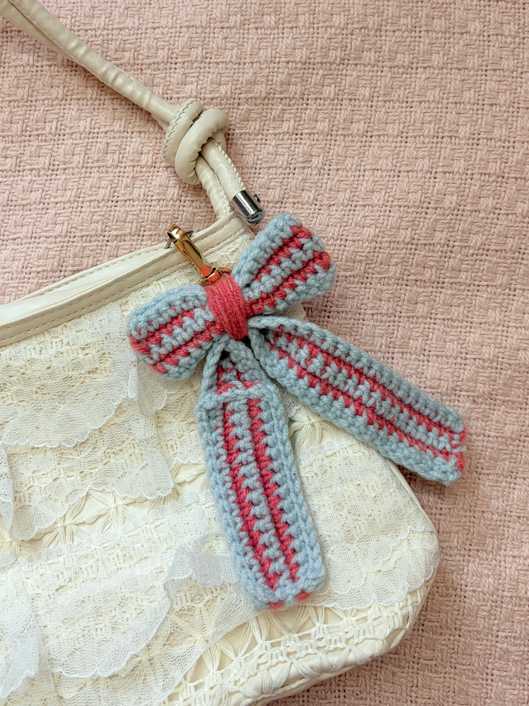

Free Crochet Pattern
Crochet Bow Lip Balm Holder Bag Charm
Create a cute crochet bow lip balm holder that doubles as a little bag charm. This beginner-friendly project uses two colors of yarn and simple single crochet rows.

About the Pattern
This cute Crochet Bow Lip Balm Holder Bag Charm is a quick and fun project that combines a striped bow with a handy little pouch to keep your lip balm.
The pattern uses basic crochet stitches and is beginner-friendly. You can customize it with your favorite colors and adjust the pouch length depending on the size of your lip balm. It also makes a cute little bag charm or a handmade gift!
Video Tutorial
Prefer to crochet along with a video? Watch the full tutorial on YouTube.
Materials
- Weight 3 acrylic yarn – 2 colors
- 3.5 mm crochet hook
- Stitch markers
- Yarn needle
- Lobster clasp / key ring
Want to shop the materials?
Check out the materials here →Pattern Details
- Pouch
- Bow Tail
- Bow Body
- Assembly
Abbreviations
Written Pattern
How to Crochet the Bow Lip Balm Holder
Pouch
Color A: Ch 16
Row 1: Sc across
Row 2: Sc across – Color B
Row 3: Sc across – Color A
Row 4: Sc across – Color B
Row 5: Sc across – Color A
Note: Alternate colors at the end of each row and carry the unused yarn.
Bow Tail
Color A: Ch 41
Rows 1–5: Sc across, alternating colors each row.
Bow Body
Color A: Ch 21
Rows 1–5: Sc across, alternating colors each row.
Assembly
- Align pouch with tail and mark 16 stitches.
- Join pouch to tail with sl st.
- Sl st around the loose edge of the pouch.
- Sew the two ends of the bow body together.
- Pinch and wrap the center to create the bow shape.
- Center the tail behind the bow and sew together.
- Attach lobster clasp/key ring.
- Weave in all loose ends.
🎀 Your crochet bow lip balm holder bag charm is ready!
A Little Note from Stitchy Days ♡
Hi there!
Thank you so much for trying one of my crochet patterns! I’m so happy to have you here, and I hope you enjoy making this project as much as I enjoyed creating it.
If you make something using this pattern, I’d love to see it! Feel free to tag Stitchy Days when you share your finished project. Seeing your creations means so much to me as I continue growing this little crochet corner.
Thank you for supporting my work and happy crocheting! ♡
